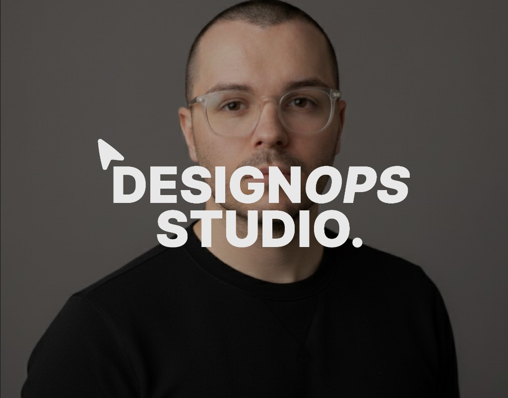
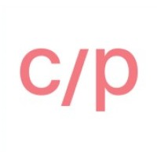
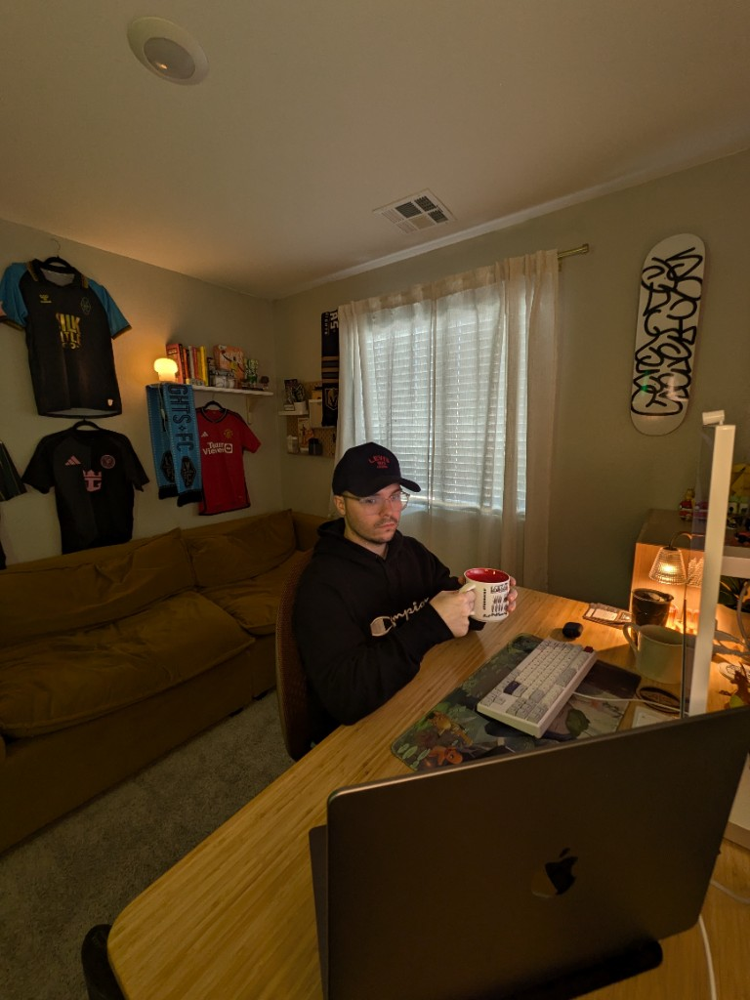
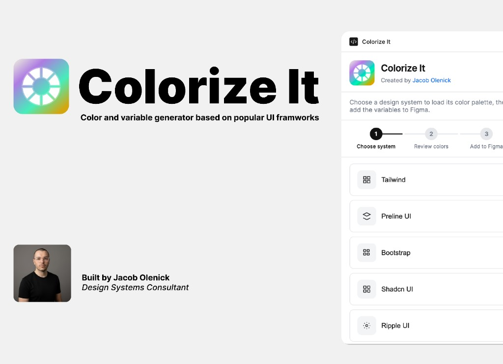
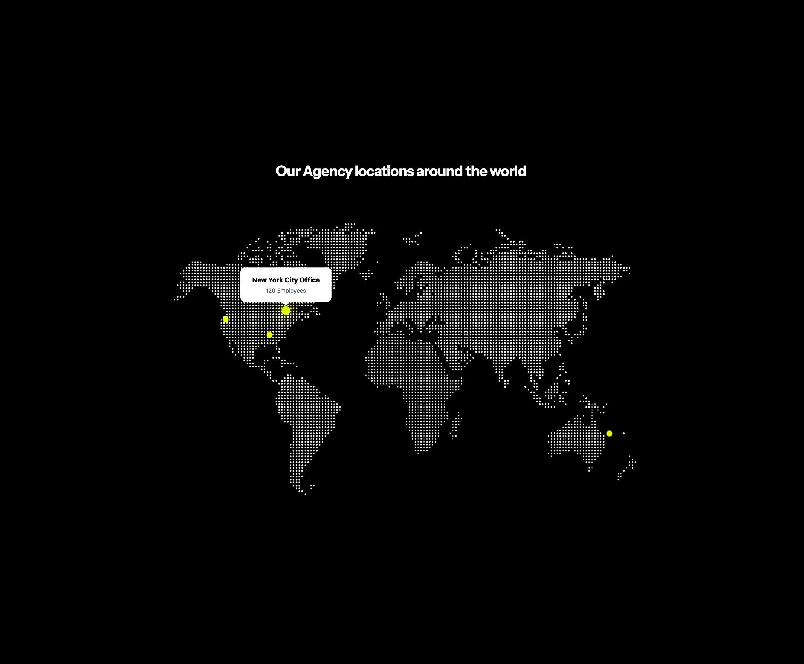
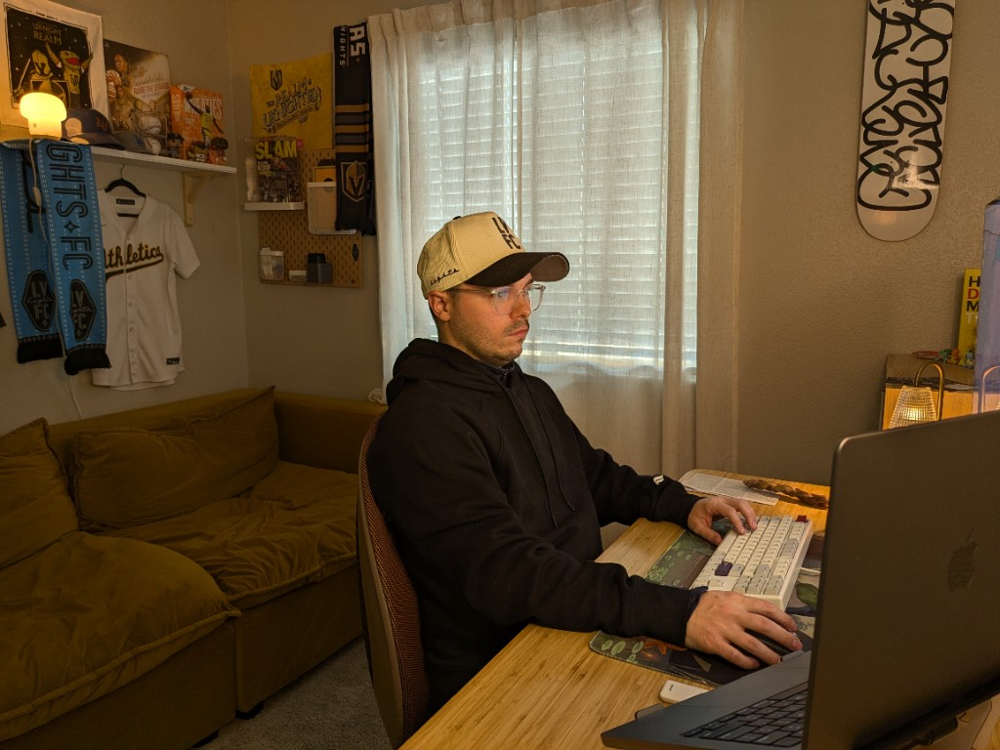
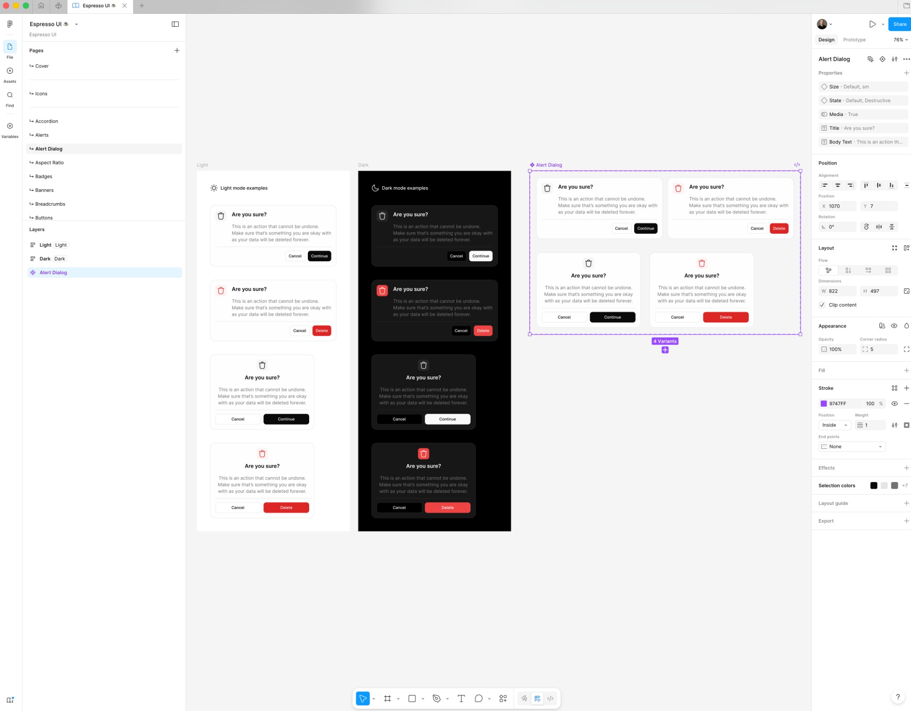

I built the ultimate baseball website for fans.
From tee-ball through high school to today — a fan-first site for offseason moves, highlights, and reliving last season while a lockout looms.
Nov 11, 2026
Thoughts and learnings on design systems, product design, and more.
From tee-ball through high school to today — a fan-first site for offseason moves, highlights, and reliving last season while a lockout looms.
Nov 11, 2026

Week one on the Lilly Design System - already impressed by the team and grateful I chose this offer.
Apr 23, 2026

Giving back, growing the brand, and shipping a Figma-first system with Claude Code and Figma MCP - alongside students from Design XP.
Apr 6, 2026

A Design Systems Studio - 0 → 1 systems for startups, from Figma to production-ready agentic design systems with Claude.
Apr 4, 2026

From CVS Health and the Rhythm Design System to Creative People, placed on Eli Lilly - Super IC and Senior Product Designer on the Lilly Design System.
Apr 2, 2026

Bridge for product designers and the design system - still designing screens and UX flows while advocating for the Rhythm Design System.
Feb 12, 2026

Building Colorize It to add color variables from Tailwind, Shadcn, Bootstrap, and more - with one click and automatic dark mode variables.
Feb 12, 2026

Exploring how to turn Espresso UI components into Figma Make components for the community, plus interactive components like maps for designers to use.
Feb 11, 2026

How building UI kits in my free time made me an expert in Figma and a better teacher for my product design team.
Feb 11, 2026

Exploring the key principles and best practices for creating design systems that can grow with your organization.
Nov 15, 2025